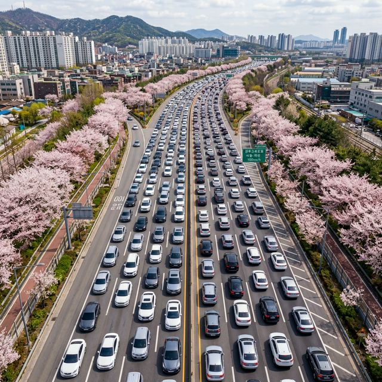
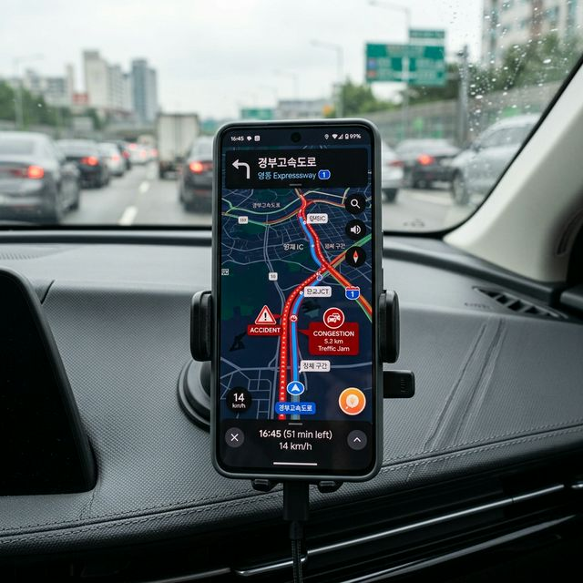
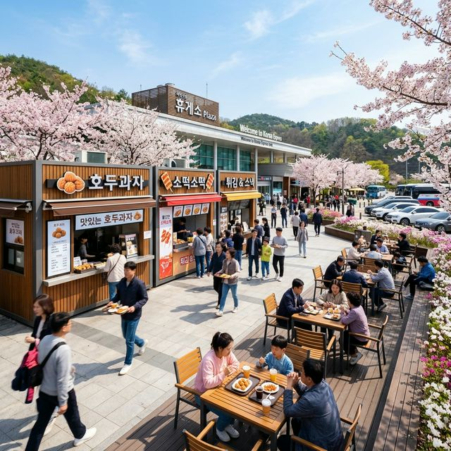

한국도로공사의 예측에 따르면, 오늘 하루 전국에서 이동하는 차량은 약 580만 대에 육박할 것으로 보입니다. 이는 평소 토요일 대비 15% 이상 증가한 수치인데요. 오전 11시부터 낮 12시까지가 지방 방향(Outbound)의 최정점 정체 시간이 될 것으로 예상됩니다.
반면, 서울 방향(Inbound)으로 돌아오는 길은 오늘 오후 5시부터 밤 8시까지가 가장 혼잡하겠습니다. 오늘 하루 일정을 짜실 때 이 시간대를 피해 '얼리 버드(오전 6시 이전 출발)' 혹은 '올빼미(오후 3시 이후 출발)' 전략을 취하시는 것이 가장 현명한 선택입니다.
단순한 내비게이션 안내만 믿고 가기엔 부족합니다. 도로 위의 변수(사고, 급작스러운 정체)를 실시간으로 파악해야 합니다.

1) 로드플러스(Roadplus): 한국도로공사 공식 앱입니다. CCTV 영상을 실시간으로 볼 수 있어, 내비가 말하는 '정체'가 실제 사고인지 단순 인파인지를 눈으로
확인할 수 있습니다.
2) T-Map(티맵): 압도적인 사용자 빅데이터를 통해 '가장 빠른 우회 도로'를 찾아내는 데 최적화되어 있습니다.
3) 국가교통정보센터(C-ITS): 고속도로뿐만 아니라 국도 연계 정황까지 포괄적으로 보여주며, 돌발 사고 정보를 가장 빠르게 푸시 알림으로 전해줍니다.
경부고속도로가 막힌다고 계속 고속도로 위에만 계신가요? 상황에 따라 국도 우회는 시간을 크게 아껴줍니다.
| 고속도로 구간 | 추천 우회 도로 | 예상 단축 시간 |
|---|---|---|
| 경부선 (오산-천안) | 1번 국도 (수원-천안) 또는 용인서울고속도로 | 약 30~40분 |
| 서해안선 (비봉-서평택) | 39번 국도 또는 평택시 구간 일반 국도 | 약 45~60분 |
| 영동선 (용인-이천) | 42번 국도 (영문리-복하제) 연계 | 약 25~35분 |
차 안에서 갇혀 있는 것이 너무 힘들다면, 아예 전략적으로 휴게소에서 휴식을 취하는 것도 방법입니다. 최근 한국의 휴게소는 단순한 화장실을 넘어 복합 문화 공간으로 변모 중입니다.

휴게소 영리하게 고르기: 주말에는 입구부터 막히는 인기 휴게소(기흥, 안성 등)보다는 상대적으로 규모는 작지만 시설이 좋은 간이 휴게소나 '내륙형 졸음쉼터'를 이용하는 것이 훨씬 쾌적합니다. 실시간 '휴게소 혼잡도' 기능을 내비게이션에서 확인하고 진입하세요.
포근한 기온 덕분에 찾아오는 '춘곤증'은 고속도로의 가장 무서운 적입니다. 벚꽃의 화사함에 한눈을 팔다 보면 전방 주시를 놓치기 십상인데요.
결국 도로는 뚫립니다. 너무 조급해하지 마세요. 차 안에서 즐길 수 있는 오디오 콘텐츠(오디오북, 팟캐스트)를 미리 다운로드해 두거나, 아이들과 함께할 수 있는 가벼운 게임 등을 준비하면 막히는 시간도 소중한 추억이 될 수 있습니다.
출발 전 '고속도로 교통정보' 앱에서 내가 갈 구간의 CCTV를 10초만 확인해 보세요. 기계적인 안내보다 훨씬 직관적입니다.
휴게소 마다 전기차 충전기 대기 상황도 앱으로 확인 가능합니다. 정체 중 방전을 막으려면 수시로 체크하세요.
주말에는 버스 전용 차로 단속이 매우 엄격합니다. 무리하게 진입했다가는 과태료 딱지와 함께 여행 기분을 망칠 수 있습니다.
도로가 막히는 것은 내가 선택한 행복(꽃구경)의 일부라고 생각하면 한결 마음이 편해집니다. 오늘 전해드린 팁들을 잘 활용하셔서, 정체된 도로 위에서도 여러분의 설렘은 멈추지 않기를 바랍니다. 모두 안전 운전하시고, 가장 아름다운 봄의 순간을 만끽하고 돌아오세요!